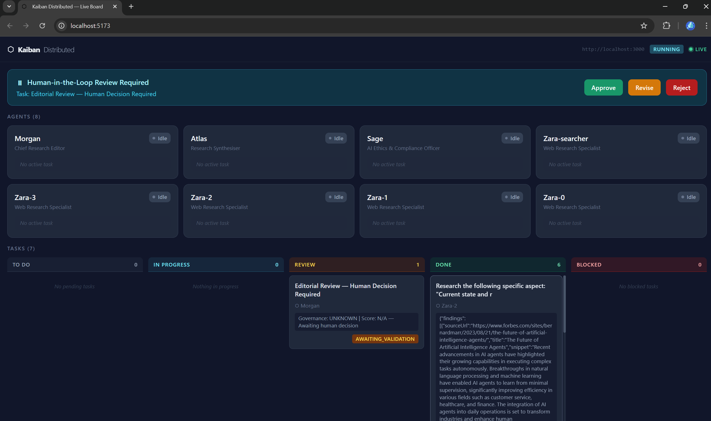

board/ in the repository).What it does
- Runs agent teams as independently deployed Node.js processes, each agent a stateful actor.
- Agents communicate through a pluggable messaging layer: BullMQ on Redis (default) or Kafka.
- Shows workflows live on a Kanban board, with human-in-the-loop approval as a workflow state.
- Exposes an A2A v0.3 gateway and MCP integration for connecting other agents and services.
- Works with KaibanJS agents and teams.
- Reports through OpenTelemetry.
Quick start
Needs Node.js 22 or later, Docker with Docker Compose, and an LLM API key (OpenAI, OpenRouter or another compatible API). Commands from the README:
git clone https://github.com/andreibesleaga/kaiban-distributed
cd kaiban-distributed
npm install
cp .env.example .env
# edit .env: set OPENAI_API_KEY or OPENROUTER_API_KEY,
# and AGENT_IDS (for example researcher,writer,editor)
docker compose up -d redis
npm run build
AGENT_IDS=gateway PORT=3000 node dist/src/main/index.jsThen check the gateway:
curl http://localhost:3000/health
curl http://localhost:3000/.well-known/agent-card.jsonThe README also covers the full multi-node demo (./scripts/blog-team.sh start), configuration and the HTTP API.
Key concepts
- Actor isolation
- Each agent runs in its own space and communicates only by messages. Workers are stateless and scale horizontally.
- Messaging layer
- One interface with BullMQ/Redis and Kafka drivers. Task and result channels are durable; board state travels on Redis Pub/Sub.
- Task lifecycle
- TODO, DOING, DONE or BLOCKED, plus AWAITING_VALIDATION when a human must approve, revise or reject.
- Federation
- An edge gateway serves an A2A v0.3 agent card and JSON-RPC (
message/send,message/stream,tasks/get,tasks/cancel).
Examples
Four examples live in the kaiban-distributed-examples repository:
- trip-planning: sequential three-agent pipeline with human approval.
- social-media-team: fan-out and fan-in of parallel composers.
- rag-knowledge-base: a single agent with retrieval.
- resume-creation: a minimal two-agent team.
Links
Licence
The repository's LICENSE file is the GNU General Public License, version 3. The repository also contains LICENSE-APACHE, the Apache License 2.0, which LICENSING.md assigns to the published npm library. The rest of the repository is GPL-3.0.